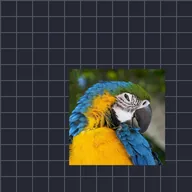

اوسیلیٹ

لیئر کو زاویے پر، گہرائی میں یا مدار میں آگے پیچھے ہلاتا ہے۔
آسلیٹ لیئر کو خود بخود آگے پیچھے حرکت دیتا ہے۔ سمت حرکت کو زاویہ کے ساتھ، ڈیپتھ میں، یا آربٹ میں گولائی میں چنتی ہے۔ فریکوئنسی فی سیکنڈ جھولوں کی تعداد ہے، میگنیٹیوڈ بتاتا ہے کہ کتنا دور جاتا ہے، اور ویو سائن (ہموار) یا ٹرائنگل (مستقل اسپیڈ) ہوتا ہے۔ فیز استعمال کریں تاکہ کئی لیئرز کو آفسیٹ کیا جا سکے اور وہ مل کر نہ ہلیں۔
سیٹنگز
| سیٹنگ | قسم | رینج | ڈیفالٹ |
|---|---|---|---|
| ڈائریکشن | انتخاب | زاویہ, گہرائی, مدار | زاویہ |
| زاویہ | زاویہ | -3600° سے 3600° تک | 45° |
| فریکوئنسی | نمبر | 0 Hz سے 16 Hz تک | 2 Hz |
| مقدار | نمبر | 0 سے 4000 تک | 25 |
| ویو | انتخاب | سائن, ٹرائی اینگل | سائن |
| فیز | نمبر | 0 سے 1000 تک | 0 |